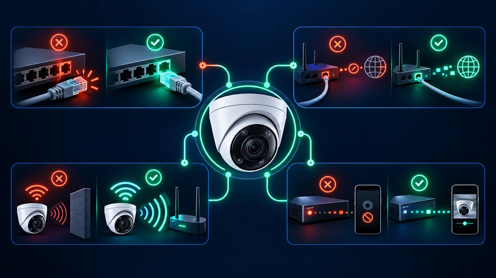
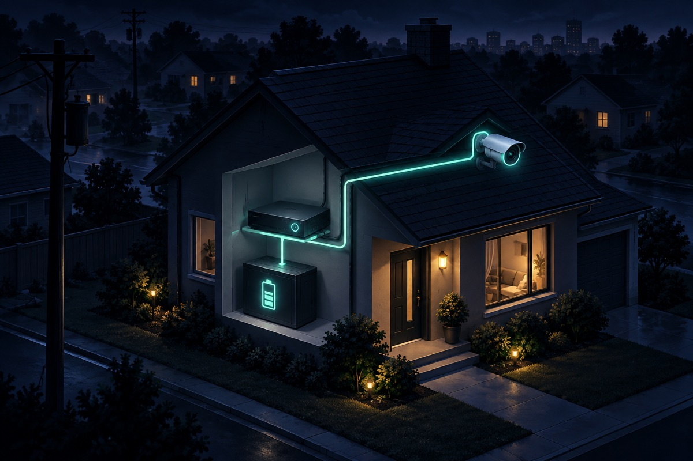

If a security camera keeps going offline, first determine whether the camera itself stopped recording or only the phone app lost access. Test the system locally, note whether one camera or every camera is affected, and write down the time of each dropout. That separates a camera or cable fault from a recorder, router, Internet, or remote-access problem.
Ubiquiti's official connectivity guidance makes the same distinction between camera connectivity and client access: weak camera connectivity can create recording gaps, while a remote-client problem can affect viewing even when recordings remain stored locally.
Check the camera status light, the recorder or switch port, and the live device list. For a PoE camera, one Ethernet cable carries both power and data, so a failed cable, connector, port, injector, or insufficient PoE supply can appear as a network outage. Ubiquiti recommends checking for power, replacing the cable, and trying another known-good switch port or PoE adapter to isolate the physical layer.
Inspect accessible cable runs for crushed sections, sharp bends, loose plugs, corrosion, and moisture at outdoor junctions. Then test with a known-good patch cable or a different compatible port. A temporary successful connection helps distinguish the installed cable path from the camera itself. Avoid factory resets during this step; resetting does not repair damaged copper, water intrusion, or an unstable PoE source.
A phone showing strong Wi-Fi inside the building does not prove the exterior camera has a stable link. Test at the camera location and consider stucco, masonry, metal, distance, and competing networks. Compare whether the problem follows busy network hours or changes when a nearby access point is used. If the camera is at the edge of reliable coverage, improve access-point placement or plan a wired connection rather than repeatedly reconnecting the device.
Our wired-versus-wireless camera guide separates the video connection, power source, recording destination, and remote access so you can choose the right fix.
A powered camera can still be offline if it has no usable IP address, receives an address from the wrong network, conflicts with another device, or cannot reach the recorder across a VLAN or firewall. Check the router, switch, recorder, or manufacturer interface for the camera's current address and status. Ubiquiti's device-connectivity documentation recommends verifying that the device has an expected IP address before moving to application-level troubleshooting.
If every camera disappears from the same NVR or DVR, check the recorder's power, storage status, network link, and camera capacity. If live video appears but playback is missing, follow our DVR/NVR not-recording checklist before formatting drives or restoring defaults. A recorder can also show a stale offline state after a network interruption, so compare its device list with a direct local camera check when the system allows it.
Connect from inside the property first. If the local system works, test the app on both Wi-Fi and cellular data, check the manufacturer's service-status page, and confirm the app and recorder are current. VPNs, privacy tools, firewall rules, DNS, or a remote-service outage can block phone access without stopping local recording. This distinction prevents unnecessary camera resets.
Environmental patterns can guide the diagnosis, but they do not prove it. A midday failure may involve temperature, a shared electrical load, or network demand. A rain-related failure may involve an outdoor connector or damaged seal. Compare device logs and uptime with the actual time of failure. Use the published operating range for the exact camera model, and see our guide to LA sun, heat, and weather effects on outdoor cameras.
Professional diagnosis is useful when the camera is mounted out of reach, outdoor connectors may have moisture damage, multiple devices restart together, cable testing is required, or footage must be preserved. Tech Secure 360 provides camera and recorder troubleshooting across Greater Los Angeles and can recommend a targeted repair or system upgrade after identifying the failing layer.
Sources: Ubiquiti, Optimizing Camera Connectivity in UniFi Protect; Ubiquiti, Troubleshooting Offline UniFi Devices; Ubiquiti, Troubleshooting UniFi Device Connectivity.

Both have real trade-offs. Here's a plain-English breakdown to help you pick.

When the power goes out, does your system keep recording? Here's how LA cameras behave in an outage.
LA's sun, heat, and salt air quietly wreck cheap cameras. Here's how to choose ones that last.
Tell us about your place and we'll respond within one business day with a tailored plan and pricing. Or call us right now.
Your request is in. A Tech Secure 360 specialist will reach out within one business day. Need help now? Call (747) 336-2737.